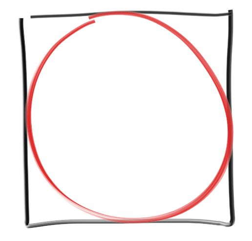
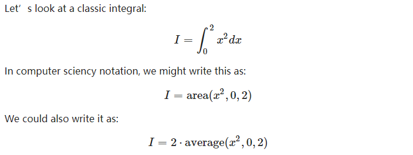

本文是 Ray Tracing: The Rest of Your Life 的学习总结。
用撒点法估算PI的值
正方形和正方形内接圆的面积比是固定的：

于是PI的值等于内接圆面积占比乘以4。
内接圆面积未知（不能用公式哦，PI是未知数），但根据圆的定义和半径，可以判定正方形内任意一点是不是在圆内，于是可以用撒点法估算圆面积占比。撒的点必然在正方形内，所以分母是撒点总数；点是否在圆内，需要算一下点到圆边距离是否小于半径，在圆内的点的数量作为分子，就可以估算面积比了。
import random
def random_range(minv, maxv):
return minv + random.random() * (maxv - minv)
def main():
N = 10000
inside_circle = 0
for _ in xrange(N):
x, y = random_range(-1.0, 1.0), random_range(-1.0, 1.0)
if x*x + y*y < 1.0:
inside_circle += 1
print "Estimate of Pi = ", 4.0 * inside_circle / float(N)
main()
# Estimate of Pi = 3.144
Law of Diminishing Returns 边际收益递减规律
上面的代码里N的值越大，估算的PI越准。但是随着撒的点越来越多，后面撒的点对PI的估算值的影响越来越小，也就是说前面撒的点对估算值影响会更大一些。价值是不等的。
Stratified Samples (Jittering) 分层样本
（学过TAA技术的话，对jitter就很熟悉了。）
上面的代码里样本是全随机分布的，如果不采取全随机，而是用别的分布方式，是不是可以使得收敛速度加快呢？答案是肯定的。
def main():
sqrt_N = 1000
inside_circle = 0
inside_circle_stratified = 0
for i in xrange(sqrt_N):
for j in xrange(sqrt_N):
x, y = random_range(-1.0, 1.0), random_range(-1.0, 1.0)
if x*x + y*y < 1.0:
inside_circle += 1
x = 2.0 * ((i + random_range()) / sqrt_N) - 1
y = 2.0 * ((j + random_range()) / sqrt_N) - 1
if x*x + y*y < 1.0:
inside_circle_stratified += 1
print "Estimate of Pi = ", 4.0 * inside_circle / float(sqrt_N * sqrt_N)
print "Stratified Estimate of Pi = ", 4.0 * inside_circle_stratified / float(sqrt_N * sqrt_N)
#Estimate of Pi = 3.142428
#Stratified Estimate of Pi = 3.141412
可以看到，同样数量样本，分层的结果优于全随机的结果。意味着收敛速度也是更优的。
but，这个优势会随着维度的增加而递减，例如把上面的代码应用到3D的球和正方体，用体积占比算PI。(维度的诅咒)
分层样本对面下面的蒙特卡罗积分影响不大。
x平方的定积分

众所周知，积分等于函数下方面积，所以第一和第二条式子等价没问题。
第三条式子需要复习下这篇资料：Average Value of a Function
即积分等于平均值乘以上下界之差。
第三条公式直接翻译成代码，验证一下：
def main():
N = 100000
sum = 0.0
for i in range(N):
x = random_range(0.0, 2.0)
sum += x * x
print 'I=', 2 * sum / float(N)
# I= 2.6686846395
手动推导x的平方的定积分，可以得到 8 / 3 = 2.666667，和上面代码的结果一致。
当定义域不是[0,2]，而是任意的[a,b]时：
def main(a, b):
N = 100000
sum = 0.0
for i in range(N):
x = random_range(a, b)
sum += x * x
print 'I=', (b - a) * sum / float(N)
main(5, 10)
#I= 291.390411702
根据解析式算定积分验证一下：
10 ** 3 / 3.0 - 5 ** 3 / 3.0 = 291.66666666666663
也是正确的。
概率密度函数、重要性采样
概率密度函数
概率密度函数有小p(X)和大P(X)之分，小p(X)描述的是一个随机变量为X的概率，大P(X)描述的是一个随机变量落在某个区间[−∞,X]的概率（对小p的积分）。
均匀分布概率密度函数
假设连续随机变量X在定义域[a,b]均匀分布(uniform)，那么小p等于1/(b - a)；大P(b)为1，P(a)为0。但对于球面坐标等多维度空间时，不一定是这样的式子。
非均匀分布概率密度函数
当X不是均匀分布时，这类分布称为non uniform。小p不再是一个常量，例如小p可能与X相关；而相应的大P依然还是取决于小p。
小p解析式积分算大P
当小p有解析式时，算它的积分式就是大P了。
例如当小p等于x/2时，大P为：
\[ P = \frac{x^2}{4} \]
大P的逆与蒙特卡罗积分
有了大P有什么用呢？可以用它来实现一个满足小p的随机数生成器，这个随机数可以用于蒙特卡罗积分！
我们知道大P是一个概率，值域是[0,1]，而随机数生成器一般都是用单位化的[0,1]，例如python的random.random()，和大P的取值范围一致！
如果把随机范围为[0,1]的均匀随机数生成器设为g，并设f(g)为经过某种映射的另一个非均匀随机数生成器，当f生成的随机数落在[a,b]区间、且概率分布满足小p时，那么有：
\[ f(P(x)) = x \]
验证边界情况是否符合：
\[ f(P(b)) = f(1.0) = b \]
\[ f(P(a) = f(0.0) = a \]
（这个式子好像很难解释，只能意会）
接着可以根据大P得到f的公式：
\[ f(x) = P^{-1}(x) \]
f是P的逆函数。
以上面的例子，算出f：
\[ P = \frac{x^2}{4} \]
\[ f = \sqrt{4P} = \sqrt{4g} \]
在使用蒙特卡罗积分迭代计算时，会生成g，于是f也就有了，也意味着满足小p分布的随机数有了。
用f和大P，就可以做完整个蒙特卡罗积分。
重要性采样
蒙特卡罗积分不一定需要pdf，但用了pdf的蒙特卡罗积分会更好。
融入pdf后，可以对样本分布更多的区间，设置更低的采样权重。反比关系。
重点要理解的是，样本的分布方式不会影响蒙特卡罗积分的结果。例如以下算x的平方积分的蒙特卡罗积分代码，用了2种不同的pdf，但结果是一样的：
def non_uniform_pdf():
def pdf(x):
return 0.5 * x # 小p
N = 100000
sum = 0.0
for _ in range(N):
x = math.sqrt(random_range(0.0, 4.0)) #根据小p推导出来的随机公式
sum += x * x / pdf(x)
print 'non_uniform_pdf I=', sum / float(N)
def uniform_pdf():
def pdf(x):
return 0.5 # 小p = 1/(b - a) = 1/(2.0 - 0.0) = 0.5
N = 100000
sum = 0.0
for _ in range(N):
x = random_range(0.0, 2.0) # 均匀分布，和main一样纯随机
sum += x * x / pdf(x)
print 'uniform_pdf I=', sum / float(N)
non_uniform_pdf()
uniform_pdf()
#non_uniform_pdf I= 2.67219787915
#uniform_pdf I= 2.66518526348
用non uniform的pdf分布做蒙特卡罗积分，这就是图形学中所谓的重要性采样了。
上面代码里的non uniform pdf也可以是别的，甚至可以和被积函数x平方几乎一样：
\[ p(x) = \frac{3}{8}x^{2} \]
积分得到大P：
\[ P(x) = \frac{x^{3}}{8} \]
取逆：
\[ P^{-1}(x) = (8x)^{\frac{1}{3}} \]
代码和结果如下：
def non_uniform_pdf2():
def pdf(x):
return 3*x*x/8
N = 100000
sum = 0.0
for _ in range(N):
x = pow(random_range(0, 8.0), 1.0/3.0)
sum += x * x / pdf(x)
print 'non_uniform_pdf2 I=', sum / float(N)
#non_uniform_pdf2 I= 2.66666666666
小结一下:
- 对整个小p的定义域做积分，结果需要等于1（面积等于概率，总面积即100%概率）。
- pdf公式越接近目标积分式，则收敛速度越快。
如果定积分范围变了呢
还是上面的x平方求积分的例子，但如果改变定积分范围，从[0,2]改成[0,1]，再次用蒙特卡罗积分+pdf求解时，pdf是要同步更新的，例如还是用uniform pdf：
def uniform_pdf():
def pdf(x):
return 1.0 # 1.0 / ( 1.0 - 0.0) = 1.0
N = 100000
sum = 0.0
for _ in range(N):
x = random_range(0.0, 1.0)
sum += x * x / pdf(x)
print 'uniform_pdf I=', sum / float(N)
print 'x^3/3 =', 1.0 ** 3/3.0
#uniform_pdf I= 0.333199982803
#x^3/3 = 0.333333333333
pdf是否可以大于1？
是可以大于1的：
def uniform_pdf():
def pdf(x):
return 2.0 # 1.0 / ( 0.5 - 0.0) = 2.0
N = 100000
sum = 0.0
for _ in range(N):
x = random_range(0.0, 0.5)
sum += x * x / pdf(x)
print 'uniform_pdf I=', sum / float(N)
print 'x^3/3 =', 0.5 ** 3/3.0
#uniform_pdf I= 0.0418766074159
#x^3/3 = 0.0416666666667
pdf是否可以小于0？
pdf不可能小于0，因为定积分上界减上界必然是正数。
球面蒙特卡罗积分 + uniform pdf
以单位球心为原点，往球面发射任意光线，假设是全随机，那么任意方向的概率密度是一样的，unifrom分布，即小p是常量，等于1/球面面积，即1/(4π)。
假设有一个要积分的函数：
\[ \int cos^{2}(\theta ) \]
要对整个球面做蒙特卡罗积分的话，此时我们已经知道有两种办法，一种是算解析解，一种是用蒙特卡罗积分。
蒙特卡罗积分+重要性采样的话，此时我们已经知道了是均匀分布以及小p的值，但大P不知道。其实大P是不需要的，因为限定了是均匀分布，回忆上面的def uniform_pdf，for循环里直接用random即可。
解析解的话，要做一番推导。因为被积函数使用的是球极坐标，首先要把完整的式子写出来：
\[ \int_{0}^{2\pi} \int_{0}^{\pi} cos^{2}(\theta ) sin\theta d\theta d\phi \]
先算出积分结果，方便验证。打开Integral Calculator，输入被积函数，得到：
\[ F = -\frac {cos^ 3(x)}{3} \]
代入定积分上下界，得到：
\[(2\pi - 0) (-\frac {cos^ 3(\pi )}{3} - (-\frac {cos^ 3(0)}{3}) ) \]
\[ = 2\pi (-\frac {-1^ 3}{3} + \frac {1}{3} ) \]
\[ = 2\pi (\frac {1}{3} + \frac {1}{3} ) \]
\[ = \frac {4\pi }{3} \]
两种方法都跑一下对比看看。用蒙特卡罗和pdf求解的代码如下：
def sphere():
def pdf(d):
return 1.0 / (4.0 * math.pi)
N = 1000000
sum = 0.0
for _ in range(N):
d = random_unit_vector()
cosine_squared = d[2] * d[2]
sum += cosine_squared / pdf(d)
print "sphere I = ", sum / float(N)
print "sphere 4 * pi /3 = ", math.pi * 4.0 / 3.0
sphere()
#sphere I = 4.18595873614
#sphere 4 * pi /3 = 4.18879020479
球面蒙特卡罗积分 + non-uniform pdf
在渲染中，根据材质的不同，对某些球面方向我们希望采样多一些，某些方向少一些，这就需要non-uniform pdf。
博主将十分感谢对本文章的任意金额的打赏^_^